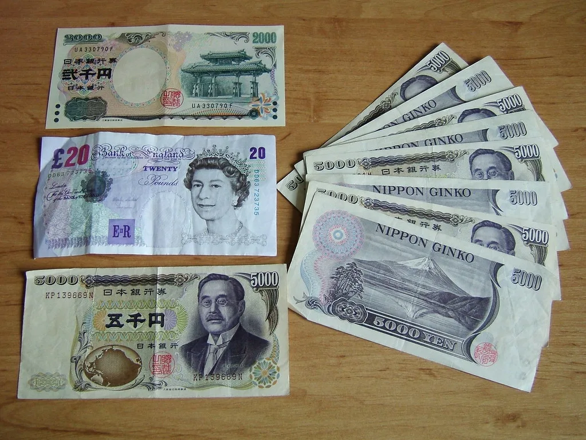

원·엔 환율 842원대…18년 만에 최저, 엔화 나홀로 약세
원·엔 재정환율이 100엔당 842원대까지 떨어지며 2008년 1월 이후 약 18년 만에 최저 수준을 기록했다. 외환시장에 따르면 원·엔 환율은 최근 며칠 사이 846원대에서 842원대로 추가 하락하며 엔화 약세 흐름이 두드러지고 있다. 원화가 비교적 강세를 유지하는 가운데 엔화만 홀로 약세를 보이는 구도가 이어지면서, 환율의 레벨 자체보다 하락 속도에 시장의 관심이 모이고 있다.
엔화 약세의 가장 큰 배경으로는 미국과 일본의 금리 격차가 꼽힌다. 일본은행이 올해 기준금리를 1%대로 올렸지만 미국의 정책금리는 여전히 3%대 중후반에 머물러 있어, 상대적으로 금리가 낮은 엔화를 팔고 금리가 높은 달러 자산으로 옮겨가려는 수요가 꾸준히 이어지고 있다. 최근 미국 국채 금리가 다시 오름세를 보이면서 이런 엔화 매도 압력이 한층 강해졌다는 분석이 나온다.

일본의 재정 건전성에 대한 우려도 엔화 약세를 거드는 요인으로 지목된다. 일본 정부는 오랜 기간 지출을 세수보다 크게 늘려왔고, 그 부족분을 국채 발행으로 충당하면서 국가 부채 수준이 꾸준히 불어났다. 최근에도 정부 지출 확대 기조가 이어지며 재정 부담이 추가로 커질 수 있다는 우려가 시장에 반영되고 있다. 여기에 더해 중동 지역의 불안정한 정세로 국제유가가 높은 수준을 유지하는 점도 부담이다. 일본은 원유 수입의 상당 부분을 중동에 의존하고 있어 고유가 국면에서 무역수지가 악화되기 쉬운 구조를 가지고 있다.
반면 원화는 비교적 안정적인 강세를 보이고 있다. 반도체 수출 호조에 따른 대규모 달러 유입이 원화를 지지하는 핵심 동력으로 작용하고 있으며, 예상보다 양호한 세수 여건이 재정 건전성에 대한 신뢰로 이어지고 있다는 평가도 나온다. 이 같은 대조적 흐름이 겹치면서 원·엔 환율의 하락 속도가 더욱 가팔라지는 모습이다.
원·엔 환율 급락은 일본을 찾는 한국인 여행객이나 일본산 제품을 수입하는 기업에는 반가운 소식이 될 수 있다. 상대적으로 적은 원화로 더 많은 엔화를 환전할 수 있게 되기 때문이다. 다만 수출 기업 입장에서는 엔저가 지속될 경우 일본 기업과 경쟁하는 품목에서 가격 경쟁력이 약화될 수 있다는 우려도 제기된다. 특히 자동차, 기계, 화학 등 한일 양국이 세계 시장에서 직접 경쟁하는 업종에서는 환율 변화가 수익성에 미치는 영향을 예의주시하고 있다.
시장에서는 엔화 약세가 단기간에 반전되기는 쉽지 않을 것이라는 전망이 우세하다. 미·일 금리 격차가 좁혀지려면 일본은행의 추가 금리 인상이나 미국 연방준비제도의 정책 전환이 필요한데, 두 조건 모두 당장 현실화될 가능성은 낮다는 분석이다. 일본 정부와 통화당국이 구두 개입에 나설 가능성도 거론되지만, 근본적인 금리 격차와 재정 우려가 해소되지 않는 한 효과는 제한적일 것이라는 관측이 많다.
국내 금융권에서는 원·엔 환율 추이를 당분간 면밀히 지켜봐야 한다는 의견이 많다. 반도체를 중심으로 한 수출 호조가 이어지는 한 원화 강세 기조 자체는 쉽게 흔들리지 않을 것으로 보이지만, 중동 정세나 국제유가 흐름에 따라 엔화 약세의 속도가 더 가팔라질 가능성도 배제할 수 없다는 분석이다. 일본을 주요 교역 상대로 두고 있는 중소 수출기업들 사이에서는 환율 변동에 대비한 헤지 전략을 다시 점검해야 한다는 목소리도 나오고 있다.